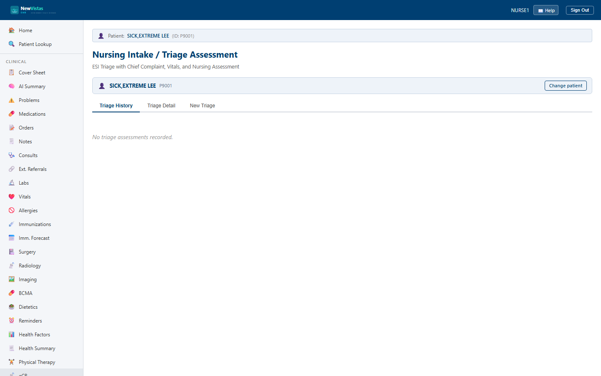

Triage
Perform an intake / triage assessment: capture the chief complaint and a full set of triage vital signs, assign an ESI acuity level, then sign the assessment and set its disposition. This is NewVistas' Emergency Severity Index triage workflow.
Open the Triage screen
- Go to
/nursing-triage. - In the Patient Bar at the top, enter the patient ID and click Load.
- The Triage History tab opens. If nothing is on file it reads "No triage assessments recorded."

What you see
Three tabs run across the top: Triage History, Triage Detail, and New Triage.
Triage History tab
- One row per triage, with columns for Date/Time, Nurse, Chief Complaint, ESI, Pain, Disposition, and Status.
- The ESI column shows the assigned acuity level (
ESI 1throughESI 5). - Click View to open the full Triage Detail.
New Triage tab
- Chief Complaint (required), Nurse ID, and Nurse Name.
- Triage Vital Signs — Temp (F), HR, RR, Sys BP, Dia BP, SpO2, and Pain (0–10).
- ESI Level — ESI 1 Resuscitation, ESI 2 Emergent, ESI 3 Urgent, ESI 4 Less Urgent, or ESI 5 Non-Urgent.
- Mode of Arrival (Ambulatory, Wheelchair, Stretcher, Ambulance) and Notes.
- Click Create Triage to save; a banner confirms the new triage ID.
Triage Detail tab
- Shows the chief complaint, HPI, arrival mode, level of consciousness, and the recorded triage vitals.
- A Sign button appears while the assessment is a Draft.
- While the disposition is Pending, Admit, Observation, and Discharge buttons let you set it.
ESI 1 is the most acute
Lower ESI numbers mean higher acuity: ESI 1 (Resuscitation) and ESI 2
(Emergent) need immediate attention, while ESI 5 (Non-Urgent) is the
lowest. The level defaults to ESI 3 (Urgent) on a new triage — set it
deliberately for every patient.
Sign before setting disposition
A new triage starts as a Draft. Open it on the Triage Detail tab and click
Sign to finalize it, then use the disposition buttons to route
the patient to Admit, Observation, or Discharge.